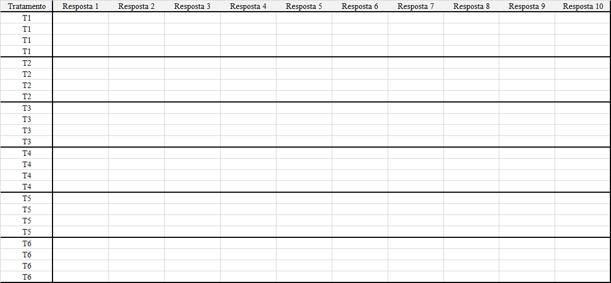

7 Tabulação de dados
Apesar da simplicidade em se tabular dados em uma planilha excel, a grande maioria dos acadêmicos tem dificuldade em se efetuar tal tarefa. Isso torna-se ainda pior, quando os mesmos precisam tabular de uma forma específica para um determinado Software. Assim, as etapas a seguir possuem a finalidade de auxiliar os usuários de R a estruturar a planilha em excel de tal forma a facilitar as análises.
O que não colocar em sua planilha!
Frequentemente é comum que os usuários de excel realizem cálculos de medidas de posição e dispersão, tais como média, variância, desvio-padrão, etc… Entretanto, essas células preenchidas por tais estatísticas de nada contribuem para quem irá trabalhar com o R, muito pelo contrário, acabam gerando mais trabalho, visto que em alguns casos podem ocasionar confundimento no Software;
Deve-se evitar nomes de colunas muito extensos, pois operacionalmente digitar tais nomes pode gerar complicações futuras;
Nome de colunas sempre na primeira linha;
Evitar nome dos níveis do fator (Tratamentos) como numérico (1,2,3,4,…), exceto quando os tratamentos são quantitativos;
Evitar pular células (Células em branco), a menos que tenha dados faltantes (parcelas perdidas).
Monte a planilha da forma mais simples possível!!!
Experimentos em delineamento inteiramente casualizado só possuem o tratamento como fator. Dessa forma, em uma planilha, só necessitamos de uma coluna de tratamentos e uma coluna de resposta.
Quando há mais de uma variável resposta, pode-se adicionar as variáveis em cada coluna, lado a lado.
Abaixo, segue um imagem de como montar um arquivo em excel de um experimento em DIC com seis tratamentos e quatro repetições e o link para o download de um arquivo em excel (extensão .xlsx)
